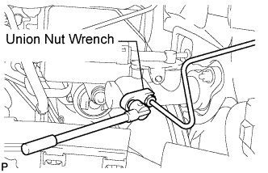

CLUTCH MASTER CYLINDER (for RHD) > REMOVAL |
| 1. DRAIN CLUTCH FLUID |
| 2. DISCONNECT CLUTCH MASTER CYLINDER TO FLEXIBLE HOSE TUBE |
 |
Using a union nut wrench, disconnect the tube.
| 3. DISCONNECT CLUTCH RESERVOIR TUBE |
 |
Using pliers, grip the claws of the clip, slide the clip and disconnect the clutch reservoir tube.
| 4. REMOVE CLUTCH MASTER CYLINDER ASSEMBLY |
 |
Loosen the clutch pedal bracket bolt.
 |
Remove the 2 nuts.
Disconnect the clutch pedal from the clevis, and remove the master cylinder.
Remove the gasket.